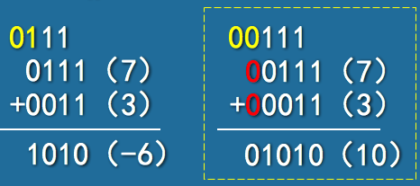
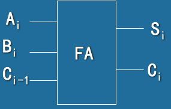
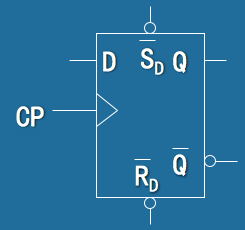

数字逻辑
一、数制码制
数字信号
在有限个离散稳定值之间做阶跃式变化的信号
取值有限
范围是离散值
晶体管工作在非线性区，处于开关状态
模拟信号
模拟信号是连续信号，任一时间段都包含了信号的连续变化
模拟电路: 晶体管工作在线性区，处于放大状态
数字逻辑电路
对数字信号信进行传递、变换、运算、存储及显示处理的电路称为数字电路
- 数值运算
- 逻辑运算
- 逻辑判断
分类
- 组合逻辑电路
- 时序逻辑电路
研究问题
电路输出信号状态与输入信号状态之间的逻辑关系
数字系统
数字系统是由实现各种功能的逻辑电路相互连接构成的整体，它能交互式地处理用离散形式表示的信息
真值
真值是指在数值前用“+”表示正数，用“-”表示负数的带符号二进制数。
机器数
机器数是指用“0”表示“+”， 用“1”表示“-”，即把符号“数值化”后的带符号二进制数
正数的原码、反码、补码都是相同的
原码
- 整数部分
- 小数部分
有两种形式的整数0原码
有两种形式的纯小数0.0原码
符号位不能直接加入运算
反码(1的补码)
对于负数，反码的数值是将原码数值部分按位求反
对于负数，反码为等长的全1码减数值部分，再加上符号位
有两种形式的整数0反码
有两种形式的纯小数0.0反码
eg：
－0.101的反码为1.010
－10101的反码为101010
补码(对2的补数)
反码加1
- 整数部分
- 小数部分
- 0和0.0的表示是唯一的

机器数加减运算
原码运算
先看符号，判断绝对值
符号位不参与运算
补码运算
[X1＋X2]~补~＝[X1]~补~＋[X2]~补~
[X1- X2]~补~＝[X1]~补~＋[-X2]~补~
补码溢出
符号位和数值位一样参加运算，若符号位产生进位，则将进位“丢掉”(高两位进位相同时可直接丢掉)
最高的两位进位不相同，产生溢出。通过添加Bit数，最高的两位进位为00，从而防止溢出

符号位为1，说明是负数补码，应对运算结果再求补码，得到原码
反码运算
[X1＋X2]~反~＝[X1]~反~＋[X2]~反~
[X1- X2]~反~＝[X1]~反~＋[-X2]~反~
循环进位
符号位参加运算，如果符号位产生了进位，则该进位应该加到和数的最低位
若符号位为1，说明是负数的反码，对结果再求反码得原码
数制三要素
- 基数
- 进位规则
- 位权
二进制乘除法
数制转换
十进制转二进制
整数部分：除以2取余数，直到商为0为止(逆序取余数)
小数部分：乘以2取整数，直到小数为0(或到达要求精度)为止(顺序取整数)
eg: (25.875)~10~＝(11001.111)~2~
十进制转n进制
整数部分：除以n取余数，直到商为0为止(逆序取余数)
小数部分：乘以n取整数，直到小数为0(或到达要求精度)为止(顺序取整数)
n进制转十进制
位权展开求和
二进制转八进制
小数点起三位一组，整数部分不够三位的向前添0，小数部分不够三位的向后添0
二进制转十六进制
即从小数点起四位一组，整数部分不够四位的向前添0，小数部分不够四位的向后添0
十进制的二进制编码(BCD码)
8421码
具有奇偶特性，当十进制数为奇数时，对应代码的最低位为1，为偶数时则为0
余3码
8421码加上3(加0011)


可靠性编码
格雷码
任意相邻两个代码之间只有一位状态不同，这样在计数过程中就不会出现其它代码，译码时就不会产生抖动和毛刺
奇偶校验码
即在数据中加入校验位，校验位的加入如果使整个代码中的“1” 的个数为奇数，称奇校验
如果使整个代码中的“1” 的个数为偶数，称偶校验

二、数字电路
正负逻辑
正逻辑
用“0”表示V~L~，用“1”表示V~H~
负逻辑
用“1”表示V~L~，用“0”表示V~H~
逻辑系列
- 同一系列的芯片具有类似的输入、输出及内部电路特征，但逻辑功能不同
- 不同系列的芯片可能不匹配
- CMOS逻辑
- TTL逻辑
CMOS
互补式金属-氧化层-半导体逻辑电路
VDD=+3V～+18V
VL=0V
VH= VDD
速度慢，功耗小，抗干扰强，集成度高
n沟道
增加V~gs~，R~ds~减小，高压导通
p沟道
增加V~gs~，R~ds~减小，低压导通
栅－漏、栅－源之间几乎没有电流
电容耦合
栅极与源和漏极之间有电容耦合
信号转换时，电容充放电，功耗较大
CMOS反相器
CMOS与非门
T1、T3串联
T2、T4并联
CMOS或非门
T1、T3并联
T2、T4串联
CMOS非反向缓存
CMOS电气特性
- 逻辑电平规格
输出端能吸收的最大电流：I~OLmax~（灌电流）
输出端能提供的最大电流：I~OHmax~（拉电流）
直流噪声容限
表示多大的噪声会使最坏输出电压被破坏,成为不可被输入端识别的值
高态：V~OHmin~ - V~LHmin~
低态：V~ILmax~ - V~OLmax~
非理想输入：输入端电路增大，功耗增大
扇入
门电路所具有的输入端的数目
扇出
在不超出其最坏情况负载规格的条件下，一个逻辑门能驱动的输入端个数
高态扇出：$\frac{I{OHmax}}{I{IHmax}}$
低态扇出：$\frac{I{OLmax}}{I{ILmax}}$
总扇出：min<高态扇出，低态扇出>
输出负载大于扇出能力：电流增大、功耗增大、温度升高、传输时延、转换时间变长
不用的CMOS端的处理
悬空时，电路噪声会使悬空端呈现高电平，间歇性造成电路故障
- 与、与非门，不用的输入端接高电平
- 或、或非门，不用的输入端接低电平
动态特性
速度
状态转换时间
输出从一个状态转换到另外一个状态所需的时间
传播时延
从输入信号变化到产生输出信号变化所需的时间
动态功耗
- CMOS管同时导通瞬间产生的功耗
- 电容充放电功耗
电流尖峰
当CMOS输出，在低态与高态之间交替变化时，从Vcc到地线的电流，通过部分导通的p沟道和n沟道晶体管而流动，持续时间很短
噪声解决方法：在Vcc与地线之间接去耦电容器
TTL
晶体管晶体管逻辑电路
- VCC=+5V
- VL=0.2V
- VH=3.6V
- 速度中等，功耗较大，性价比高
低态（低电平）：0.0～0.8V
高态（高电平）：2.0～5.0V
CMOS/TTL接口
A驱动B：A为输出端
直流噪声容限
高态：V~OHmin~ - V~LHmin~
低态：V~ILmax~ - V~OLmax~
扇出
高态扇出：$\frac{I{OHmax}}{I{IHmax}}$
低态扇出：$\frac{I{OLmax}}{I{ILmax}}$
总扇出：min<高态扇出，低态扇出>
剩余驱动能
高态剩余驱动能：高态扇出 - 总扇出
低态剩余驱动能： 0
三、逻辑代数
逻辑
事物的前因和后果所遵循的规律
逻辑代数
用于处理有限个逻辑变量的数学运算体系。又称为布尔代数
逻辑与
F＝f(A，B)＝A$\and$B=A·B＝AB
逻辑或
F＝f(A，B)＝A$\or$B＝A＋B
逻辑非
F=A^’^
异或
$F=A\oplus B = A\bar{B} + \bar{A}B$
可作为模为2的加法
同或
$F=A\odot B = AB + \overline{A}\cdot\overline{B}$
偶数个变量的异或和同或互反
基数个变量的异或和同或相同
偶数个1异或为0(做奇偶校验)
偶数个1同或为1(做奇偶校验)
逻辑函数
逻辑变量和逻辑函数的取值只有0和1
函数和变量之间的关系由“ 与、或、非 ” 三种基本运算决定
逻辑函数的相等
两个逻辑函数，输入相同时，值也相同
逻辑函数的表示
- 真值表
- 表达式
- 卡诺图
- 时序图、波形图
逻辑代数运算规则
分配率
$A(B\oplus C)=AB\oplus AC$
$A+(B\odot C)=(A+B)\odot (A+C)$
代入规则
任何一个含有变量A的逻辑等式,如果将所有出现A的位置都代之以同一个逻辑函数F,则等式仍然成立
反演规则($\bar{F}$)
0、1互换
A、$\bar{A} $互换
与、或互换
保持符号运算顺序不变
对偶规则(F`)
0、1互换
A、$\bar{A} $不变
与、或互换
保持符号运算顺序不变
性质
若一个定理是正确的，则其对偶式也一定正确
若两个逻辑式相等，则它们的对偶式也相等
(F`)`=F
展开规则
$F=f(X_1, X_2, \dots X_n)$
$=\bar{X_1}f(0, X_2, \dots X_n) + X_1f(1,X_1,\dots X_n)$$=[X_1+f(0, X_2, \dots X_n)][\bar{X_1}f(1,X_1,\dots X_n)]$
正负逻辑(对偶关系)

逻辑函数的标准形式
标准与或式(积之和)、最小项和式
最小项($\sum$m)
积项包含所有变量，每个变量只出现一次
- 任意输入，有且只有一个最小项为1
- n个变量一共有2n个最小项
- 不相同的最小项的乘积为0
- 所有最小项的和为1
- 相邻最小项和可消去互反变量
标准与或表达式：由最小项或组成
将代数式转换为标准与或式(真值表中的1，1为原变量)
将函数式变换成一般“与或”表达式
使用$A=A(B+\bar{B})$将所有非最小项转换为最小项
标准或与式(和之积)、最大项积式
最大项($\prod$M)
和项包含所有变量，每个变量只出现一次
- 任意输入，有且只有一个最大项为0
- n个变量一共有2n个最大项
- 不同的最大项和为1
- 所有最大项之积为0
- 相邻最大项积可消去互反变量
标准或与表达式：由最大项积组成
将代数式转换为标准或与式(真值表中的0，0为原变量)
将函数表达式转换成一般“或与”式
使用$A=(A+B)(A+\bar{B})$将非最大项扩展成最大项
最大项最小项互反
标准式
n个变量组成的函数式，每个变量在函数式的每一项中都必须以原变量或反变量的形式出现一次，且仅出现一次
卡诺图
圈0，得最简或与式(和之积)(0为原变量)
圈1，的最简与或式(积之和)(1为原变量)
禁止逻辑
圈出的与或式乘以禁止项的非等于正确值
多乘的禁止项可以在后边加上
四、组合逻辑设计
步骤
- 逻辑抽象,逻辑赋值
- 作真值表
- 逻辑化简
- 逻辑函数表达式
- 逻辑电路图
与非和或非是通用逻辑电路，可以转换成任意门
逻辑转换
- $A+B=\overline{\bar{A}\cdot \bar{B}}$
替代尾因子
$F=\sum{E_i}=H_i\overline{T_1}\overline{T_2}\dots$
其中$H_i$为头部因子，T为尾部因子，可在T中插入头部因子，作为替代尾因子
设计无反变量的逻辑电路
- 求出函数的最简“与或”式
- 把函数整理成$F=\sum{E_i}$的形式
- 选择合适的替代尾部因子
- 将或转换为与非
基本运算电路
半加器
S：结果
C：进位
全加器

74183集成全加器
全加器74183的级连：A2A1 + B2B1
74283超前进位加法器
全减器
D:差
G:借位
7485集成比较器
8 3编码器
约束：$I_i\cdot I_j = 0$
$Y_2=\overline{\bar{I_4}\bar{I_5}\bar{I_6}\bar{I_7}}$
$Y_1=\overline{\bar{I_2}\bar{I_3}\bar{I_6}\bar{I_7}}$
$Y_0=\overline{\bar{I_1}\bar{I_3}\bar{I_5}\bar{I_7}}$
优先编码器
Y~s~=0表示无编码信号输入(选通输出端)
$\bar{Y}_{EX}=0$表示有编码信号输入(扩展输出端)
$Y_2=\overline{ST[I_4+I_5+I_6+I_7]}$
译码器
E:使能端，高电平有效
3-8译码器 74LS138
$\overline{Z_0}到\overline{Z_7}输出M_0到M_7$
数据分配器(2-4译码器,E为数据)
选中的输出端输出$\bar{E}$
数据选择器


利用3-8译码器实现逻辑函数
- 将输出化成标准积之和形式再转成和之积
- 3-8译码器每个输出端都输出一个最大项，根据逻辑函数所需的最大项构造电路图
利用数据选择器实现逻辑函数
- 列出真值表
- 将真值表移到数据选择器的输入端
或利用4选1数据选择器(输出可以被分组总结出来)
eg(保留地址端)
双4路74LS153数据选择器
组合逻辑电路险象
竞争$A\cdot \bar{A}$
某个门电路的两个信号同时向相反方向变化
原因
- 变化时间有微小差异
- 信号边沿变化时间存在差异
结果
- 导致险象(毛刺)
冒险(险象)
输出出现瞬间的逻辑错误。工程上也称为毛刺
- 若在输入变化而输出不应发生变化的情况下输出产生险象，称为静态险象
- 若在输入变化而输出应该发生变化，输出在变化过程中产生的险象称动态险象
- 若错误输出为负脉冲称“ 0 ”型险象
- 若错误输出为正脉冲称“ 1 ”型险象
险象判断
险象消除
五、触发器
触发器(Flip-Flop)
能够存储一位二进制信息的基本单元电路称触发器
- 具有两个能自行保持的稳定状态
- 具有一对互补输出( $Q$、 $\bar{Q}$ )
- 有一组控制(激励 、驱动)输入
- 或许有定时(时钟)端CP(Clock Pulse)
- 在输入信号消失后,电路能将获得的新状态保存
SR触发器
特征方程
$Q^{n+1}=S+\bar{R}Q^n$
约束条件(S和R不能同时为1)
$\bar{S}+\bar{R}=1$（与非门结构）
$S\cdot R=0$（或非门结构）
真值表
与非门结构
或非门结构
钟控S-R触发器
主从S-R触发器
时钟下降沿输出主触发器状态，解决空翻问题
cp=1,从触发器保持
cp=0,主触发器保持,从触发器输出主触发器状态
状态转换图
- 确定状态个数
- 确定得到每个状态的条件
- 确定不同状态间的转换条件
D触发器
- CP=0：保持
- CP=1： $Q^{n+1}=D$
JK触发器
$Q^{n+1}=J\overline{Q^n}+\overline{K}Q^n$
JK触发器将SR触发器的输出反馈到输入，消去了约束条件
翻转状态不稳定
主从JK触发器
将主从SR触发器的输出反馈到输入，解决了空翻和消去了约束
cp=1,从触发器保持
cp=0,主触发器保持,从触发器输出主触发器状态
一次变化
CP为“1”期间，主触发器仅能翻转一次
Q=0,K被封锁，CP=1期间，J只要有一次为1，$Q^{n+1}=1$
$\bar{Q}$=0,J被封锁，CP=1期间，K只要有一次为1，$Q^{n+1}=0$
上升沿接收，下降沿改变
cp=1期间J、K应该保持不变，不然会发生一次变化
T触发器
$Q^{n+1}=T\oplus Q^n$
T=0保持
T=1翻转
下降沿触发

集成触发器
集成D触发器

上升沿
同步工作
CP=1
若$\bar{S}\cdot \bar{R}=1$发挥D触发器的作用
否则发挥SR触发器的作用
CP=0
异步工作
发挥SR触发器的作用(约束)
集成JK触发器
下降沿
同步工作
若$\bar{S}\cdot \bar{R}=1$发挥JK触发器的作用
否则发挥SR触发器的作用
CP=1
异步工作
发挥SR触发器的作用(约束)
边沿JK触发器
触发器之间的转换
p141
本博客所有文章除特别声明外，均采用 CC BY-SA 4.0 协议 ，转载请注明出处！